OdinFleet Guide
This section provides a detailed guide to OdinFleet, starting with core concepts and then covering the Web Dashboard features in more detail.
Core Concepts
Fleet
A fleet is a group of robots that share common capabilities and are managed through a single fleet adapter.
Task
A task is a unit of work assigned to a robot, such as navigation, delivery, or patrol.
Traffic Scheduling
Traffic scheduling ensures that robots move through shared spaces without collisions or deadlocks.
OdinFleet coordinates robot paths using time-based schedules rather than direct robot-to-robot communication.
Core OdinFleet Features
This section describes the main features of OdinFleet.
{kind=link}
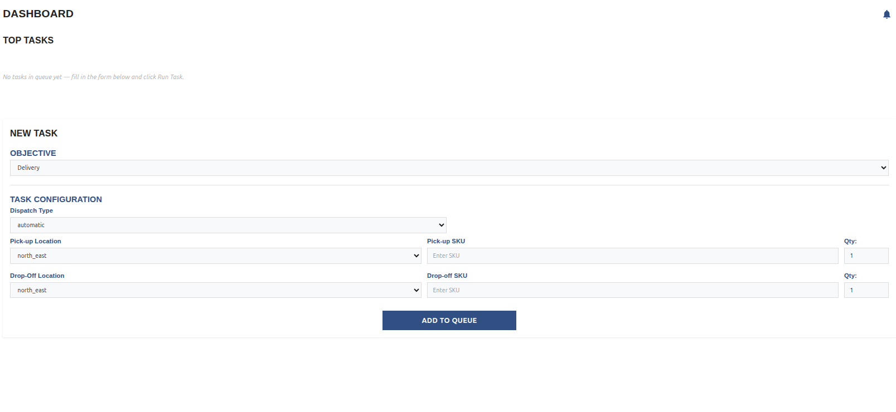
OdinFleet currently supports the following core functionalities:
Go to Place - Sends a robot or an entire fleet to a specified location on the map.
Patrol - Commands a robot or fleet to continuously move between defined waypoints.
Delivery - Directs a robot to pick up an item from a specified location and deliver it to a designated drop-off point.
Go to Place
The Go To Place command allows users to send a robot or fleet to a selected destination on the map.
You add a Go to Place task by selecting the robot or a fleet you want to use and then setting the location you want the fleet or the robot to move to.
{kind=link}
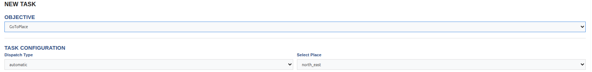
Patrol
The Patrol command enables robots to continuously move between predefined waypoints. This is useful for monitoring areas or performing repetitive tasks.
To create a Patrol task, select a robot or fleet and define at least two waypoints. A minimum of two locations is required, selecting only one location will be treated as a Go To Place task.
{kind=link}
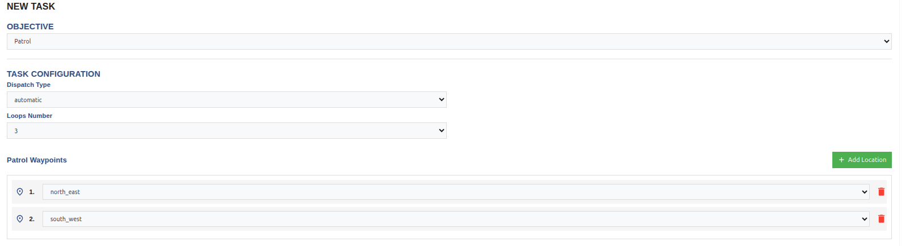
Delivery
The Delivery command allows a robot to move to a specified pickup location, collect an an item using its ID, and deliver it to a specified drop-off point. This feature is designed for efficient transport between predefined location.
To create a Delivery task, select the robot or fleet, define the pickup and drop-off locations, and provide the ID of the cargo.
{kind=link}
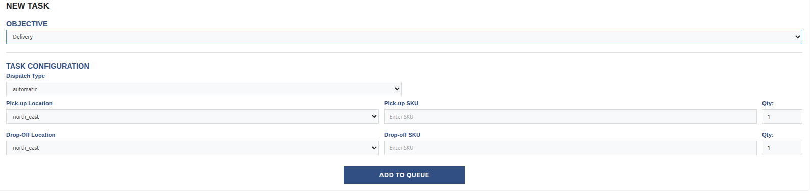
Task Queue
All created tasks are added to the Task Queue.
{kind=link}
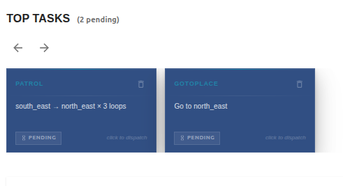
To execute a task, select it from the queue and confirm dispatch. A prompt will display the task name and description for verification before execution. Once confirmed, the assigned robot or fleet will begin the task.


After a task is completed, it can be re-dispatched by selecting it again from the queue.
{kind=link}
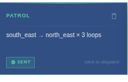
Tasks can be removed by clicking the bin icon. A confirmation prompt ensures tasks are not deleted accidentally. One confirmed, the task is permanently removed.
{kind=link}
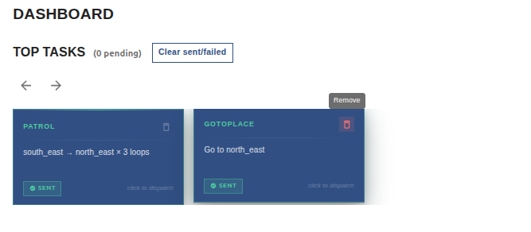
{kind=link}
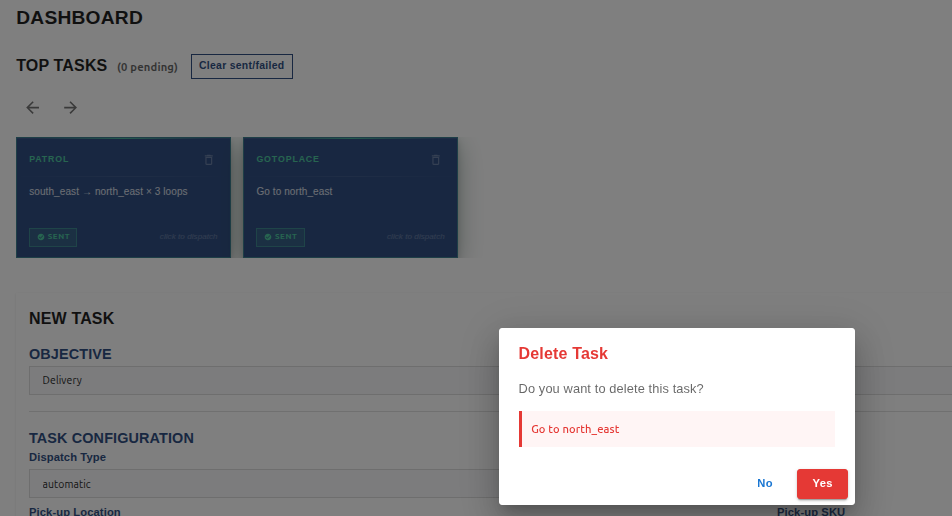
Task List
The Task List page displays all tasks that have been dispatched.
For each task, you can view its type, dispatch date and time, duration, and current status (queued, in progress, completed, or cancelled).
{kind=link}
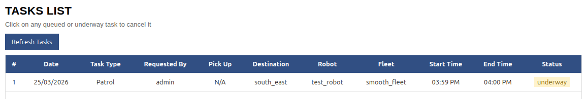
Clicking on a task will give you a prompt with the choice of cancelling the task or keeping it alive.
{kind=link}
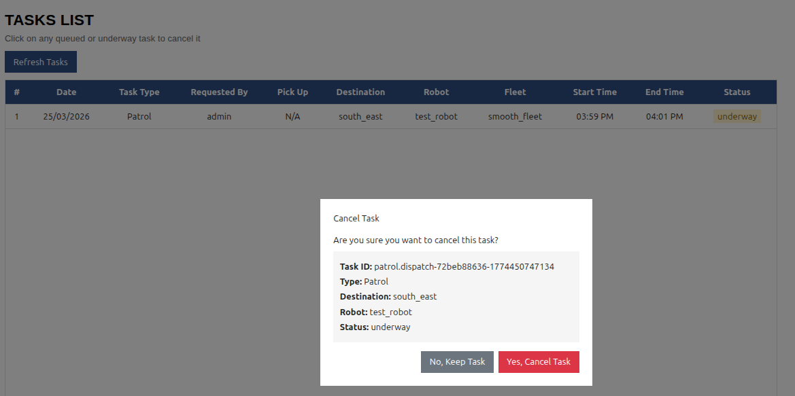
Note
Only dispatched tasks appear in this list. Tasks in the Task Queue are not shown here.
A task marked as queued in the Task List indicated that no robot or fleet was available at the time of dispatch. The task will be automatically assigned once resources become available.
Map Page
The Map Page provides a 2D top-down view of the environment in which robots and fleets operate. It represents the physical space and defines where robots can move and navigate.
On this page, you can view:
All robots and their associated fleets.
Waypoints that define valid robot navigation paths.
Map levels if multiple levels exists
Environmental resources such as doors and lifts
Detailed information about robots and waypoints.
{kind=link}
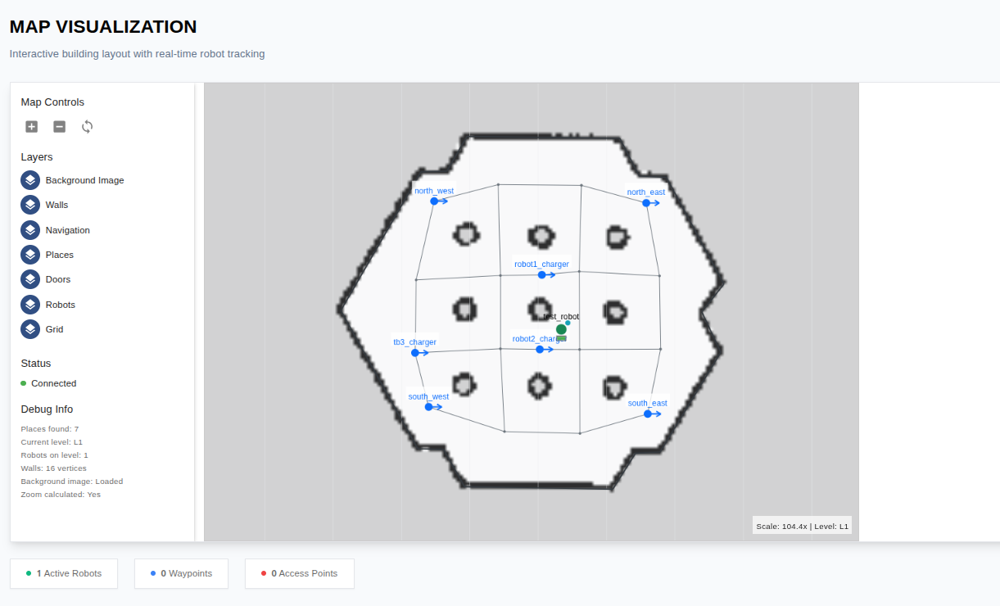
When a task is dispatched to a robot or fleet, the map updates in real time, showing robot movement throughout the environment.
{kind=link}
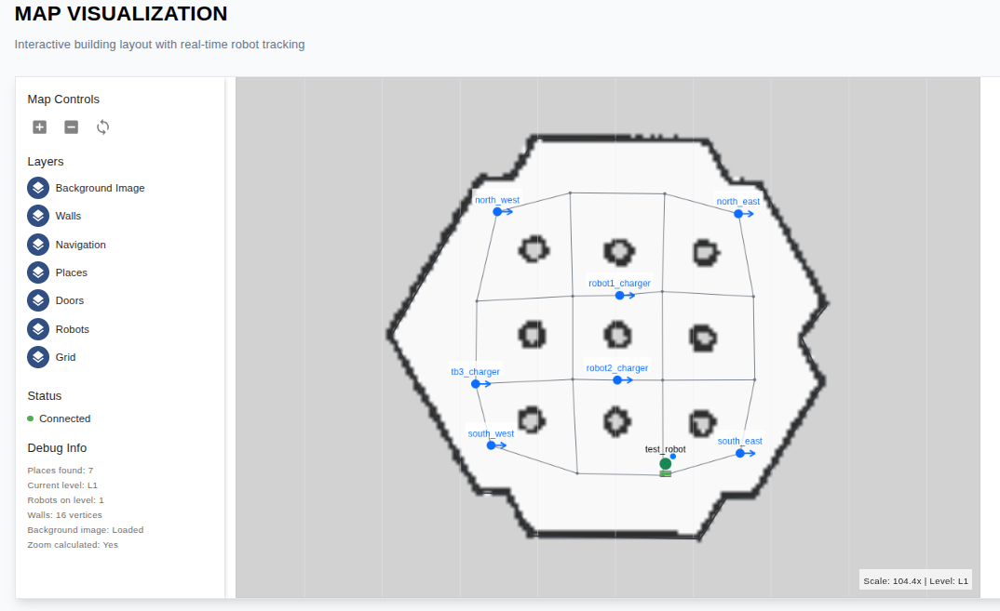
Robot’s Page
The Robot’s Page displays all avaialble robots, each represented by an individual card.
{kind=link}
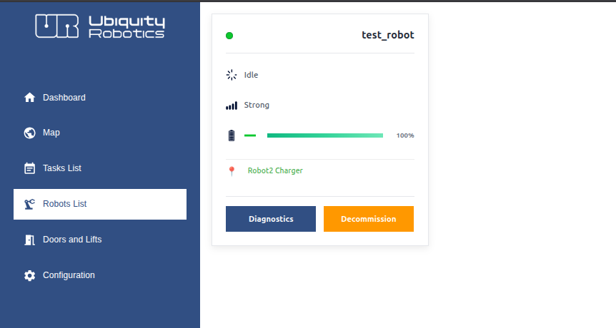
Each card contains key information about a robot, including its current state (idle, charging, or executing task), connection signal strength, battery level, and current position.


You can decommission a robot by clicking the Decommission button. A confirmation prompt will appear, allowing you to either reassign the robot’s active tasks to other robots or set it to an idle behavior, such as moving to a charging station.
{kind=link}
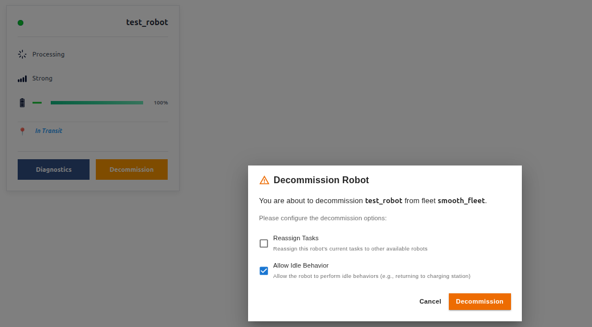
Another important feature is the Diagnostics view. When you click the Diagnostics button, a dedicated page opens where you can inspect detailed information about the robot, including ROS2 topics, current state, battery status, and other system data. This provides a clear interface for monitoring and troubleshooting robot behavior.
{kind=link}
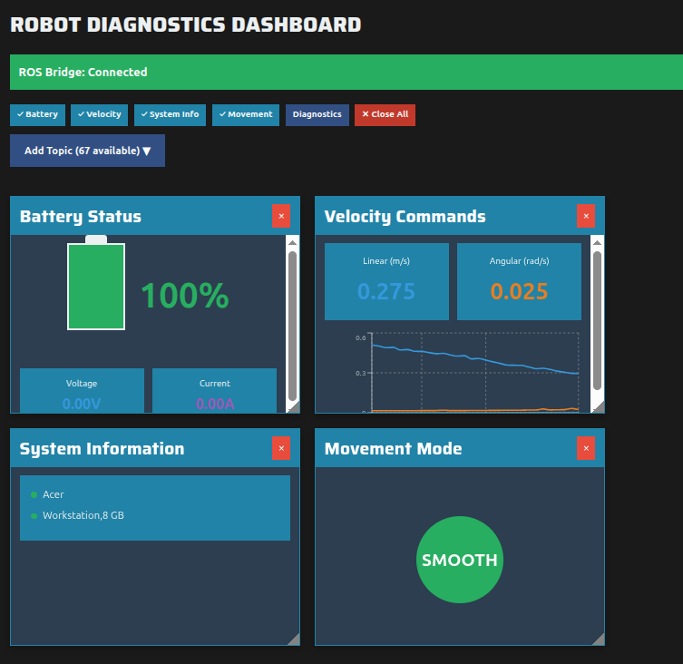
Doors and Lifts
The Doors and Lifts page provides two separate lists: one for doors and one for lifts.
The doors list includes information such as the door ID, name, and control system details. The lifts list contains the relevant information required to manage and monitor lift resources.
This page not only allows you to monitor doors and lifts, but also to control them. You can configure rules that define when doors should open or when lifts should move, based on specific robot actions or system conditions.
Warning
These features are not yet fully implemented or tested. Use them at your own risk.
Configuration
The Configuration Page allows you to configure the web dashboard and manage your personal settings.
You can update your profile details, including your profile name, email, and password.
It also allows you to switch between light and dark mode.
{kind=link}
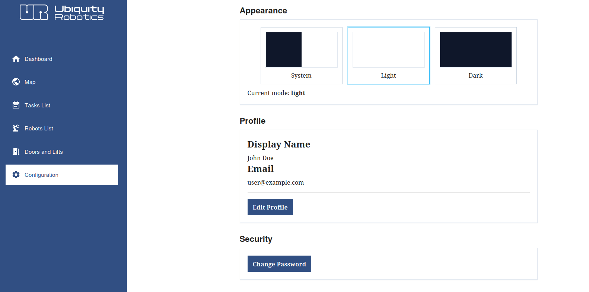
Feedback
The Feedback Page allows you to quickly report issues to the team.
If you encounter problems with the dashboard, robot control, or other system resources, you can use this page to submit a report.
Provide your contact information, select the affected robot or software, and describe the issue in detail.
Our team will respond as soon as possible.
{kind=link}
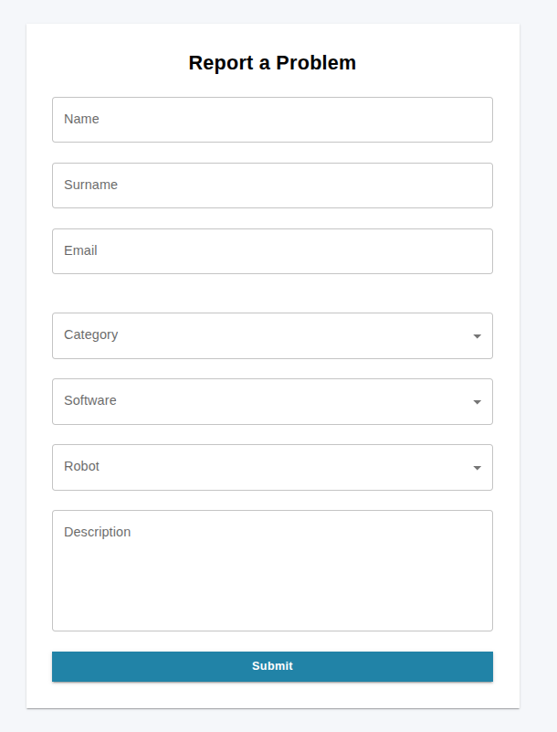
Note
You can also contact us directly through our contact email: Ubiquity Robotics support.
Next Steps
With an understanding of the core concepts and features of the Web Dashboard, you can now start using it to manage your own robot fleets.
To contribute to OdinFleet or customize it for your own configuration, reach out to us at Ubiquity Robotics support.